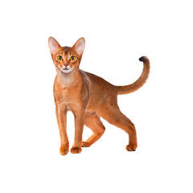
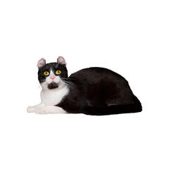
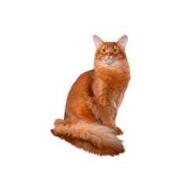
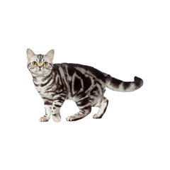
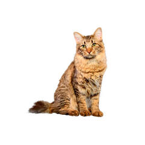
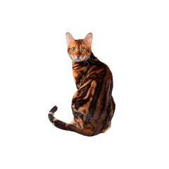
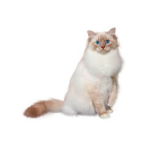
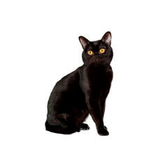
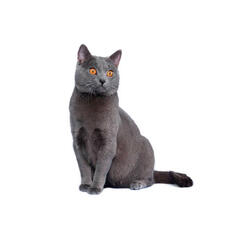

The Abyssinian Cat 
Fun Facts
Some people call them the Cats from the Blue Nile.
Some people believe that the breed was created in Great Britain
The Somali Breed
VIDEO
The American Curl Cat 
Fun Facts
They are a good Pets
They are normally friendly towards humans and other pets .
They are born with straight ears that begin to curl backward 3-5 days .
VIDEO
The Somali Cat 
Fun Facts
They are nicknamed the Fox Cat due to their bushy tail.
They are believed to be a result of crossbreeding between anAbyssinian Cat and a domesticated longhair cat
They have a coat that is very thick and needs a lot of attention
VIDEO
The American Shorthair Cat 
Fun Facts
It was given its name to distinguish it froom other
The only way to know if its American is with certified
An American Shorhair was named Cat Of The Year in 1965, 1984, and 1996.
The American Bobtail Cat 
Fun Facts
They have a naturally short bobtail that can be seen above
They make great therapy pets.
They mature fairly slow, taking 2-3 years to reach adult size.
The Bengal Cat 
Fun Facts
They are the only domestic cat with markings that resemble the markings on leopards, jaguars, and ocelots.
Up until the 1970s these cats were called Safari Cats.
They don't have a typical meow. They make a raspy noise that sounds like a bark.
The Birman Cat 
Fun Facts
The Birman Cat was the sacred cat of Myanmar (Burma),
They are born all white and develop their colors as they mature.
They don't reach full maturity until they are around 3 years old.
The Bombay Cat 
Fun Facts
They were bred to resemble the black leopard in India.
Their paw pads are entirely black which is uncommon in other black cats.
They are very smart cats.
The Chartreux Cat 
Fun Facts
The breed was named after monks' yellow and green Chartreuse liquors.
They were bred to a hav quiet voices so they would not disturb the monks
Monks Bred Chartreux cats whhich is how the breed came to be.